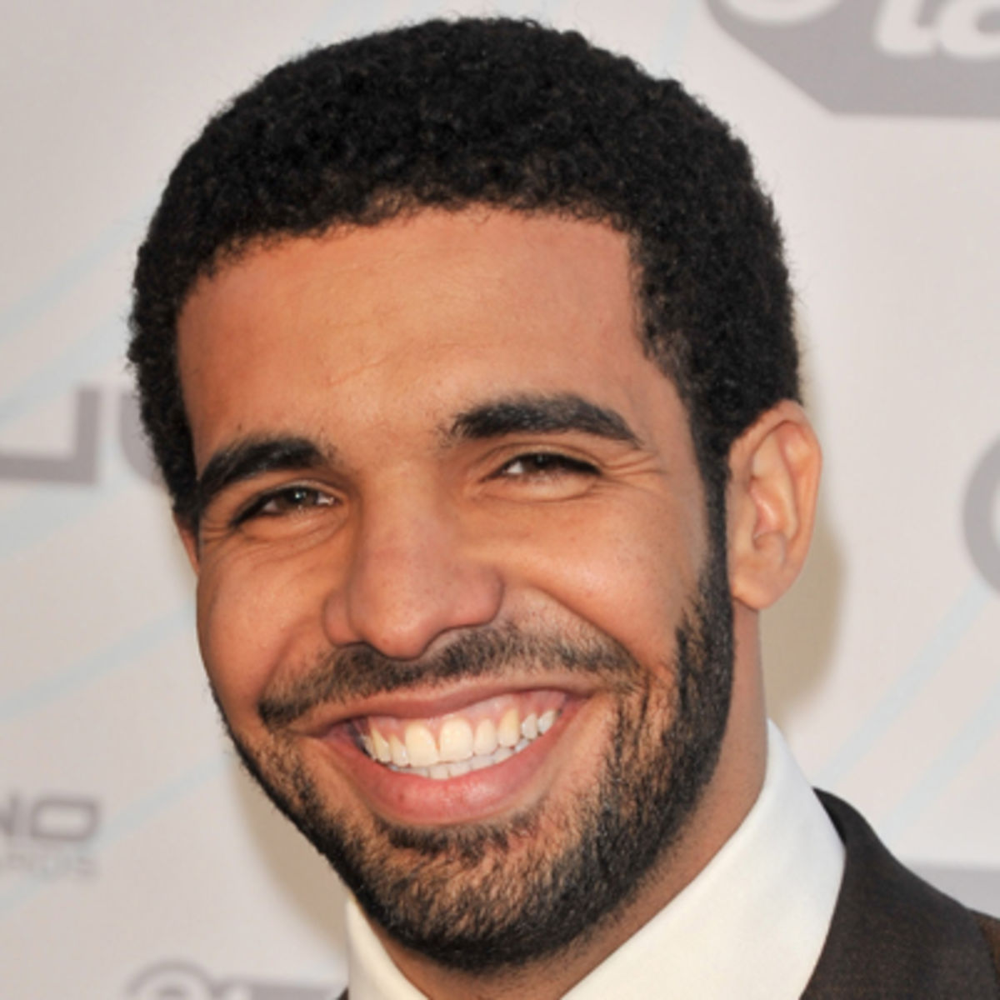

Age: 29
Top Songs: Hotline Bling, Started from the Bottom, Energy, Take Care, Back to Back
Net Worth: $88 million
 Starting out the final four is Canada's own, Drake. Drake brings an energy to the game that no one else can and has a charming mentality that has captured the hearts and ears of listeners everywhere. His flow is impossible not to vibe to, and his wordplay is clever yet cool at the same time. The only thing preventing him from cracking the top three at this point and time is that he doesn't have many hits, as many of his songs aren't meant for the radio.That's the one thing that nearly every other rapper on this list has, and if Drake could have that too, he would be a scary competitor. He's one of my rappers to watch in the new year.